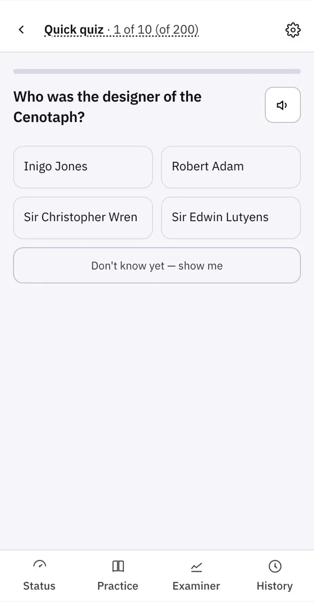
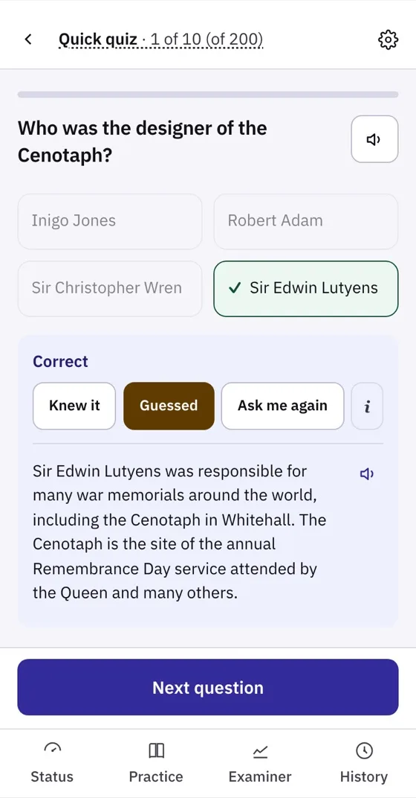
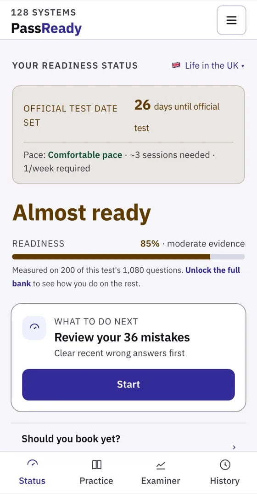

Week 7 · shown in class
An app I am building for people preparing for a test they usually get one go at: citizenship, driving theory, radio licences. Many are studying in a second language, against a date they cannot move.
It is a good place to look for this week's idea, because most of its hardest screens are ones a quiz app never bothers to design: not knowing, not being sure, and what to do next.
Screens captured from the current build. The app is in review for Google Play, so there is nothing to download yet; its public page is here.
1 / 5
State 1 · not knowing
Most quiz apps make you pick one of the four. A lucky guess then looks exactly like knowledge, and the app's picture of you is wrong from the first question.
Here, not knowing has its own button, worded as not yet rather than no. It shows the answer instead of scoring a guess.
For your A2Which of your screens forces someone to pretend they know?
Try it · the pass mark
State 2 · not sure yet
Move the sliders. With few answers the likely range is wide, and while it crosses the pass mark the app refuses to give a verdict.
That refusal is a designed state, with its own words, its own colour and its own next step. Leave it undesigned and the app shows a confident number it has not earned.
Look for itSet 85% right, then add answers slowly. At what point does it commit to a verdict, and what changed?


State 3 · feedback, then the next action
After an answer: correct or not, then a choice the person makes about themselves: Knew it, Guessed, or Ask me again.
Coming back later, the first thing on screen is not a score but the next action: review your 36 mistakes, and a button that starts it. The same rule as today's empty state: offer the action that moves someone on.
Your turn · in the workshop
Back to week 7's lecture sheet · the workshop
5 / 5